20250226
1. hwe zkfd host
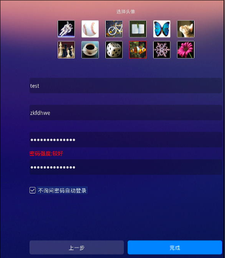
# uname -a
Linux zkfdhwe 6.2.16 #m4+1nfs5.6 SMP PREEMPT_DYNAMIC Fri Nov 1 12:58:14 CST 2024 x86_64 GNU/Linux
Could be run on gen12 idv.
2. dual vm rescue
USB network adapter:
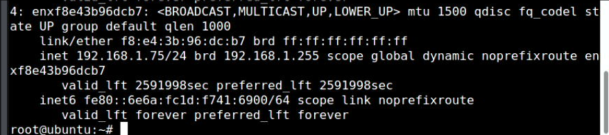
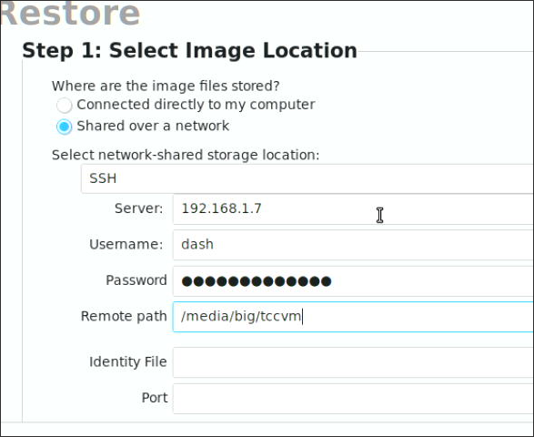
256GB rescue image:
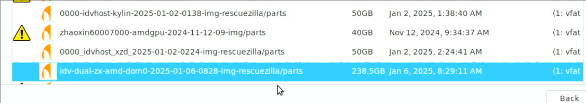
destination:
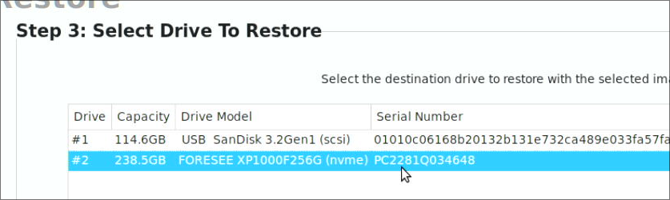
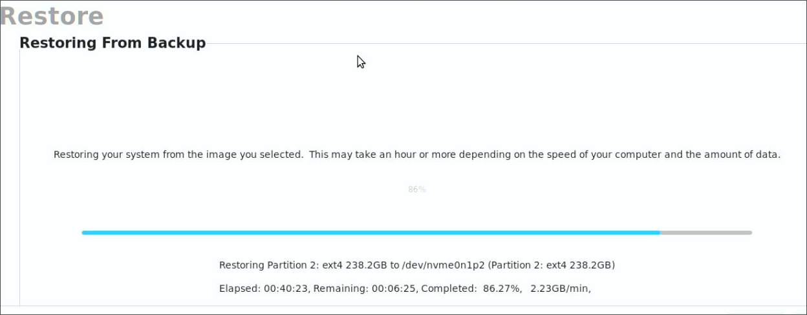
After restore, configuration:
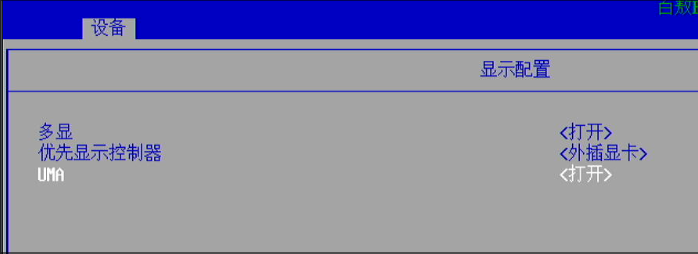
Save/Restart the machine.
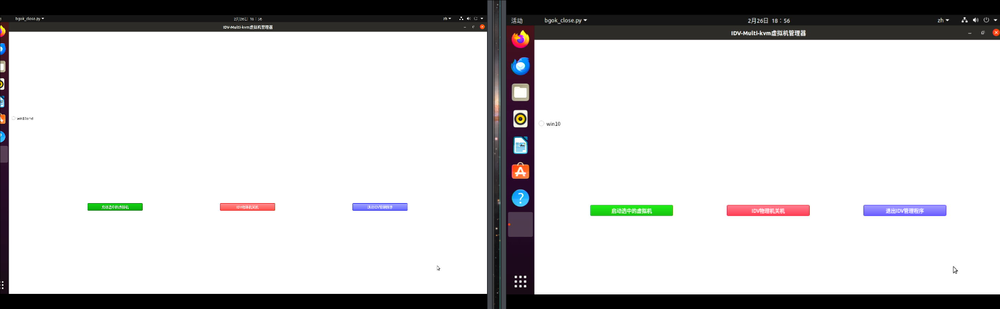
ssh into the machine and shutdown :
root@zkfd:~# virsh list
Id 名称 状态
-------------------------
1 dom0zx running
2 dom0amd running
root@zkfd:~# shutdown -h now
3. fnnas
Download from fnnas.com:
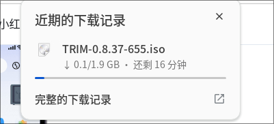
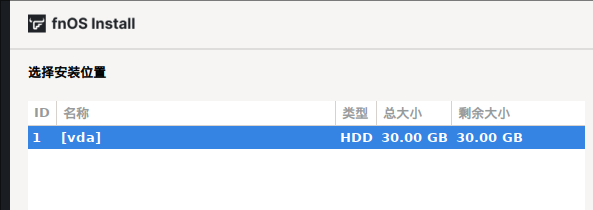
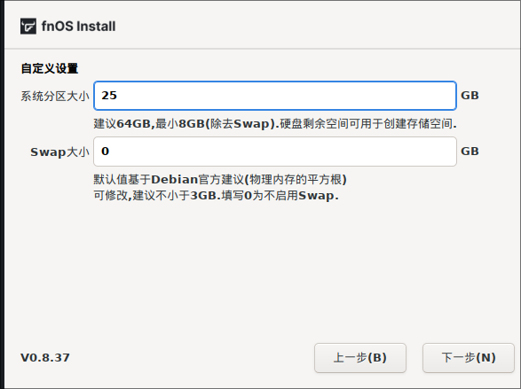
4. kylinlxchost
Install packages:
sudo apt install -y iotop vim nethogs s-tui lxc lxc-templates lxcfs smplayer
cd debs
sudo apt install ./libvirt0_6.0.0-0ubuntu8.20_amd64.deb ./libvirt-daemon_6.0.0-0ubuntu8.20_amd64.deb ./libvirt-daemon-driver-lxc_6.0.0-0ubuntu8.20_amd64.deb ./libvirt-daemon-driver-qemu_6.0.0-0ubuntu8.20_amd64.deb ./libvirt-daemon-system_6.0.0-0ubuntu8.20_amd64.deb ./libvirt-clients_6.0.0-0ubuntu8.20_amd64.deb ./libvirt-daemon-system-sysv_6.0.0-0ubuntu8.20_amd64.deb
sudo reboot
Added:
# cat /etc/lxc/default.conf
lxc.apparmor.profile = unconfined
# vim /usr/share/lxc/config/common.conf
lxc.mount.auto = cgroup:rw proc:rw sys:rw
lxc.mount.entry = /sys/fs/fuse/connections sys/fs/fuse/connections none bind,optional 0 0
# Blacklist some syscalls which are not safe in privileged
# containers
lxc.seccomp.profile = /usr/share/lxc/config/common.seccomp
# Lastly, include all the configs from /usr/share/lxc/config/common.conf.d/
lxc.include = /usr/share/lxc/config/common.conf.d/
### tty0, tty1, tty3, tty4, tty5, tty6, tty7, tty8
lxc.cgroup.devices.allow = c 4:0 rwm
lxc.cgroup.devices.allow = c 4:1 rwm
#lxc.cgroup.devices.allow = c 4:3 rwm
#lxc.cgroup.devices.allow = c 4:4 rwm
#lxc.cgroup.devices.allow = c 4:5 rwm
#lxc.cgroup.devices.allow = c 4:6 rwm
lxc.cgroup.devices.allow = c 4:7 rwm
lxc.cgroup.devices.allow = c 4:8 rwm
## graphics. /dev/dri
lxc.cgroup.devices.allow = c 226:0 rwm
lxc.cgroup.devices.allow = c 226:128 rwm
## graphics. /dev/fb0
lxc.cgroup.devices.allow = c 29:0 rwm
### sound
lxc.cgroup.devices.allow = c 116:* rwm
### input
lxc.cgroup.devices.allow = c 13:* rwm
lxc.mount.entry = /dev/snd dev/snd none bind,optional,create=dir
zkfdlxc:
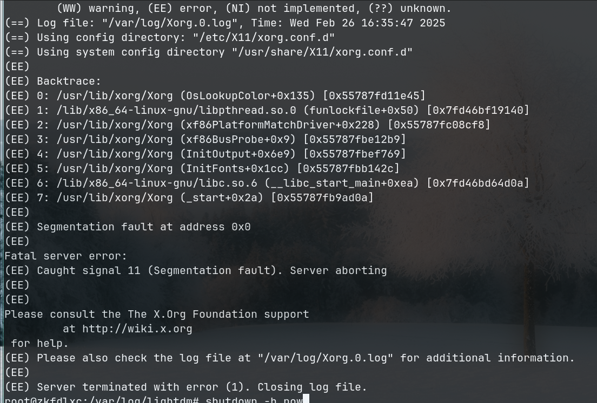
kylinlxc/uoslxc, OK.
zkfdhwe30g, OK.
5. kylin libvirt changes
Get the source code:
Added followinig to `/etc/apt/sources.list`
deb-src http://mirrors.lzu.edu.cn/ubuntu/ focal main restricted
deb-src http://mirrors.lzu.edu.cn/ubuntu/ focal-updates main restricted
deb-src http://mirrors.lzu.edu.cn/ubuntu/ focal universe
deb-src http://mirrors.lzu.edu.cn/ubuntu/ focal-updates universe
deb-src http://mirrors.lzu.edu.cn/ubuntu/ focal multiverse
deb-src http://mirrors.lzu.edu.cn/ubuntu/ focal-updates multiverse
deb-src http://mirrors.lzu.edu.cn/ubuntu/ focal-backports main restricted universe multiverse
deb-src http://archive.canonical.com/ubuntu focal partner
deb-src http://mirrors.lzu.edu.cn/ubuntu focal-security main restricted
deb-src http://mirrors.lzu.edu.cn/ubuntu focal-security universe
deb-src http://mirrors.lzu.edu.cn/ubuntu focal-security multiverse
# apt-get source libvirt-daemon-driver-lxc
Diffs:
test@kylinidvhost:~$ diff Code1/libvirt-6.0.0/src/lxc/lxc_container.c ~/Code/libvirtlxc/libvirt-6.0.0/src/lxc/lxc_container.c
798c798
< { "/proc/sys", "/proc/sys", "none", MS_BIND|MS_NOSUID|MS_NOEXEC|MS_NODEV|MS_RDONLY, false, false, false },
---
> { "/proc/sys", "/proc/sys", "none", MS_BIND|MS_NOSUID|MS_NOEXEC|MS_NODEV, false, false, false },
801c801
< { "sysfs", "/sys", "sysfs", MS_NOSUID|MS_NOEXEC|MS_NODEV|MS_RDONLY, false, false, false },
---
> { "sysfs", "/sys", "sysfs", MS_NOSUID|MS_NOEXEC|MS_NODEV, false, false, false },
test@kylinidvhost:~$ diff Code1/libvirt-6.0.0/debian/rules ~/Code/libvirtlxc/libvirt-6.0.0/debian/rules
50,51c50,51
< WITH_SELINUX = --with-selinux --with-secdriver-selinux --with-selinux-mount=/sys/fs/selinux
< WITH_APPARMOR = --with-apparmor --with-secdriver-apparmor --with-apparmor-profiles
---
> WITH_SELINUX = --without-selinux
> WITH_APPARMOR = --without-apparmor
124,125c124,125
< $(WITH_SELINUX) \
< $(WITH_APPARMOR) \
---
> $(WITH_SELINUX) \
> $(WITH_APPARMOR) \
215,218c215,218
< dh_install -p libvirt-daemon-system usr/lib/libvirt/virt-aa-helper
< dh_install -p libvirt-daemon-system etc/apparmor.d
< dh_apparmor -p libvirt-daemon-system --profile-name=usr.lib.libvirt.virt-aa-helper
< dh_apparmor -p libvirt-daemon-system --profile-name=usr.sbin.libvirtd
---
> #dh_install -p libvirt-daemon-system usr/lib/libvirt/virt-aa-helper
> #dh_install -p libvirt-daemon-system etc/apparmor.d
> #dh_apparmor -p libvirt-daemon-system --profile-name=usr.lib.libvirt.virt-aa-helper
> #dh_apparmor -p libvirt-daemon-system --profile-name=usr.sbin.libvirtd
246c246
< rm debian/libvirt-daemon-system/etc/apparmor.d/local/*
---
> #rm debian/libvirt-daemon-system/etc/apparmor.d/local/*
Changes are made for installation.